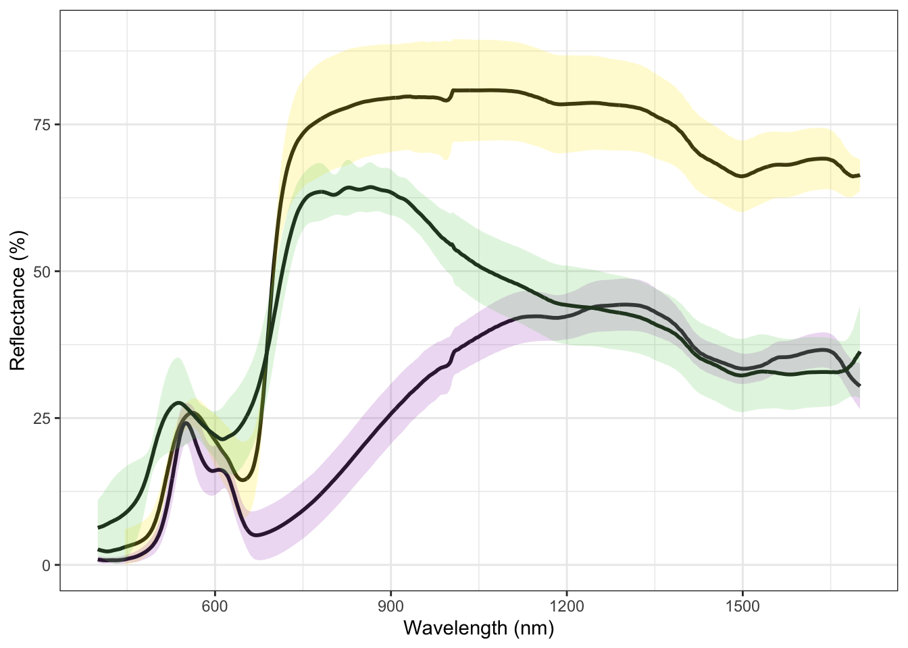
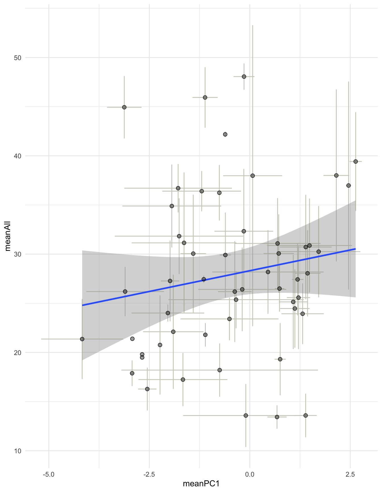
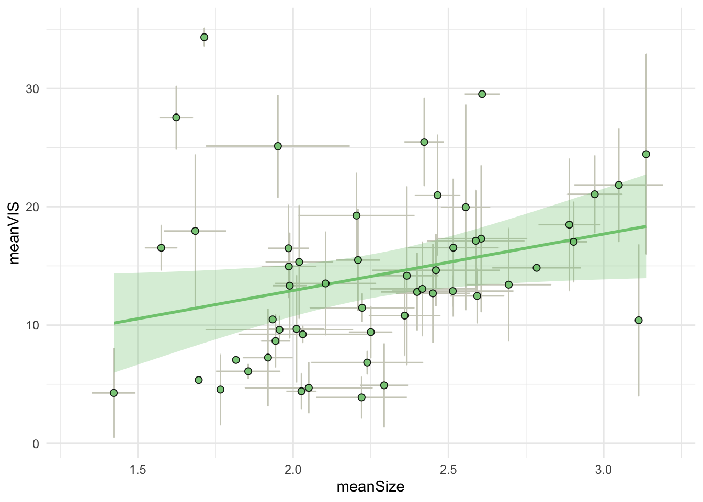
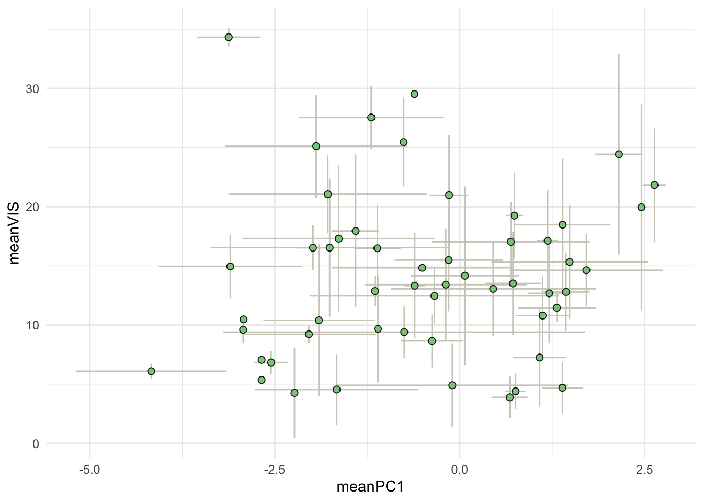
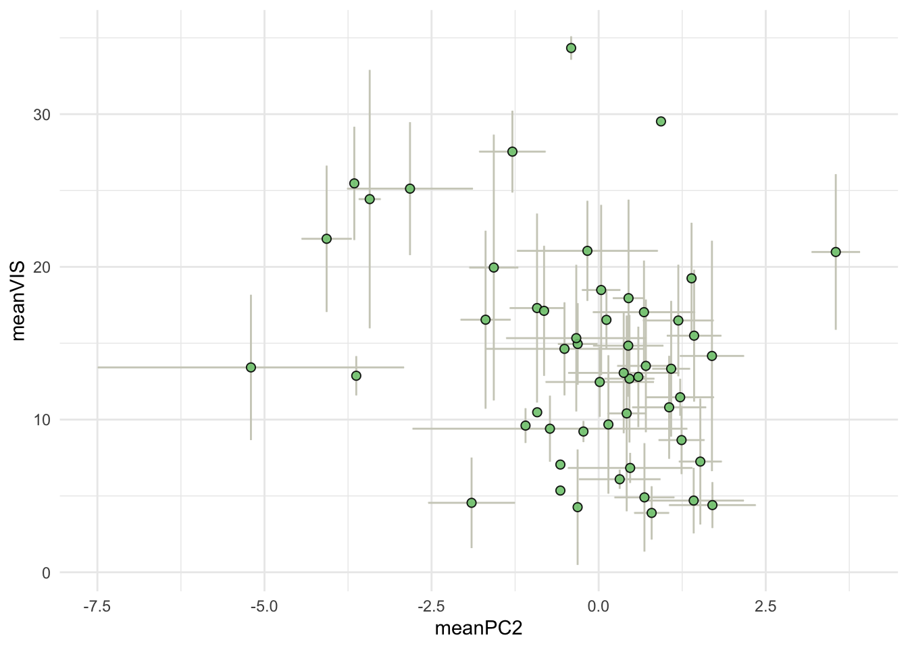
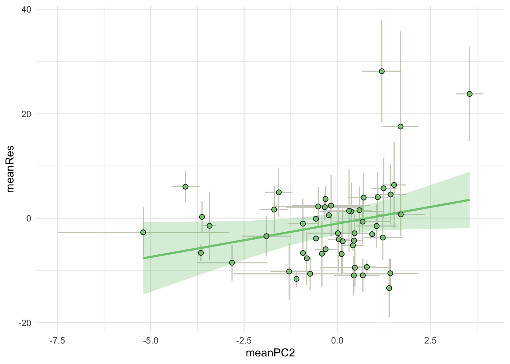
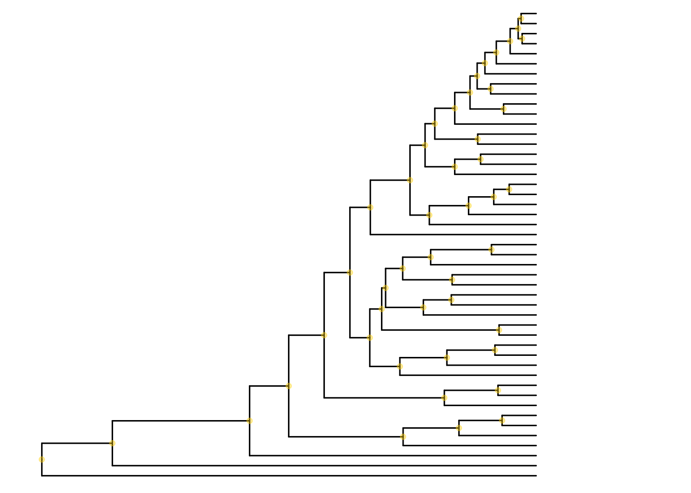
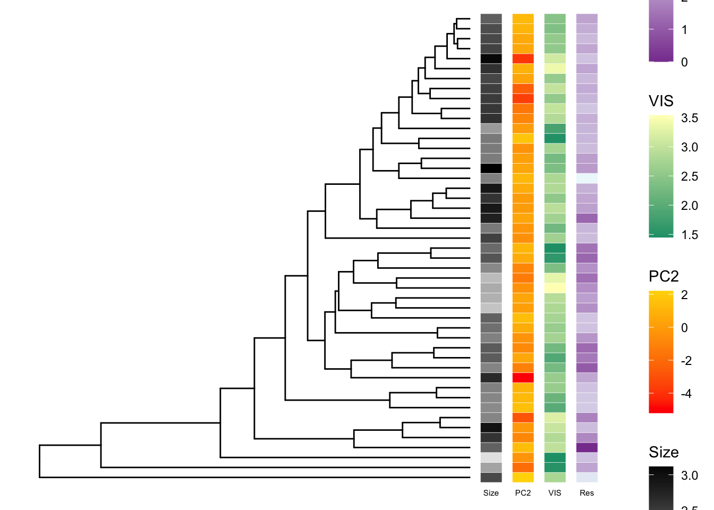

Manuscript figures
options(scipen = 4)Libraries
source("./MacroEcol_1_Libraries.R")
library(matrixStats)Data
Reflectance <- read.csv("../Data/FromCode/Reflectance_PData.csv")[-1]Raw Reflectance examples
Examples are
A. prasinus A. rayneri A. laetus
Step1Example <-
Reflectance %>%
select(
wl,
contains("prsi") |
contains("rayn") |
contains("lats")
) %>%
select(-prsi06)
S2Example <-
Step1Example %>%
mutate(Prsi.sd = rowSds(as.matrix(Step1Example[, c(2, 3, 4, 5, 6)]))) %>%
mutate(Prsi.mn = rowMeans2(as.matrix(Step1Example[, c(2, 3, 4, 5, 6)]))) %>%
mutate(Rayn.sd = rowSds(as.matrix(Step1Example[, c(7, 8, 9, 10, 11)]))) %>%
mutate(Rayn.mn = rowMeans2(as.matrix(Step1Example[, c(7, 8, 9, 10, 11)]))) %>%
mutate(Lats.sd = rowSds(as.matrix(Step1Example[, c(12, 13, 14, 15, 16)]))) %>%
mutate(Lats.mn = rowMeans2(as.matrix(Step1Example[, c(12, 13, 14, 15, 16)]))) %>%
select(1, 18, 17, 20, 19, 22, 21)
ggplot(S2Example, aes(x = wl)) +
geom_line(aes(x = wl, y = Prsi.mn),
size = 1, colour = "#121212"
) +
geom_ribbon(aes(
y = Prsi.mn,
ymin = Prsi.mn - Prsi.sd,
ymax = Prsi.mn + Prsi.sd,
fill = "#1d987f"
), alpha = .2) +
geom_line(aes(x = wl, y = Rayn.mn),
size = 1, colour = "#121212"
) +
geom_ribbon(aes(
y = Rayn.mn,
ymin = Rayn.mn - Rayn.sd,
ymax = Rayn.mn + Rayn.sd,
fill = "#189a39"
), alpha = .2) +
geom_line(aes(x = wl, y = Lats.mn),
size = 1, colour = "#121212"
) +
geom_ribbon(aes(
y = Lats.mn,
ymin = Lats.mn - Lats.sd,
ymax = Lats.mn + Lats.sd,
fill = "#6dcf68"
), alpha = .2) +
scale_fill_manual(values = c("#a950c3", "#ffe900", "#6dcf68"), name = "fill") +
scale_color_manual(values = c("#a950c3", "#ffe900", "#6dcf68"), name = "fill") +
xlab("Wavelength (nm)") +
ylab("Reflectance (%)") +
theme_bw() +
ylim(0, 90) +
theme(legend.position = "none")
Correlations with climate
Data
Figs <- read.csv("../Data/FromCode/ConsReflEcolInd.csv")[-1]setting up
ToPlotPCs <-
Figs %>%
dplyr::select(-phylogeny_name) %>%
mutate("spp" = substr(ind, 1, 4)) %>%
select(-1) %>%
dplyr::group_by(spp) %>%
dplyr::summarise(
meanAll = mean(R_ALL),
meanVIS = mean(R_VIS),
meanNIR = mean(R_NIR),
meanRes = mean(Res),
meanPC1 = mean(PC1),
meanPC2 = mean(PC2),
meanSize = mean(size),
sdAll = sd(R_ALL),
sdVIS = sd(R_VIS),
sdNIR = sd(R_NIR),
sdRes = sd(Res),
sdPC1 = sd(PC1),
sdPC2 = sd(PC2),
sdSize = sd(size)
)Total reflectance vs. PC1
ggplot(ToPlotPCs, aes(x = meanPC1, y = meanAll)) +
geom_errorbar(aes(
ymin = meanAll - sdAll,
ymax = meanAll + sdAll
),
col = "#cecec2"
) +
geom_errorbarh(aes(
xmin = meanPC1 - sdPC1,
xmax = meanPC1 + sdPC1
),
col = "#cecec2"
) +
geom_smooth(method = "lm") +
geom_point(size = 2, alpha = 0.4, fill = "#7fc97f") +
geom_point(size = 2, pch = 21, colour = "black", alpha = 0.7) +
theme_minimal() +
theme(legend.position = "none")## `geom_smooth()` using formula 'y ~ x'## Warning: Removed 3 rows containing missing values (geom_errorbarh).
VIS - Size
ggplot(ToPlotPCs, aes(x = meanSize, y = meanVIS)) +
geom_errorbar(aes(
ymin = meanVIS - sdVIS,
ymax = meanVIS + sdVIS
),
col = "#cecec2"
) +
geom_errorbarh(aes(
xmin = meanSize - sdSize,
xmax = meanSize + sdSize
),
col = "#cecec2"
) +
geom_smooth(
method = "lm", color = "#7fc97f",
fill = "#7fc97f", alpha = 0.3
) +
geom_point(
size = 2, pch = 21, fill = "#7fc97f",
colour = "black", alpha = 0.9
) +
theme_minimal() +
theme(legend.position = "none") +
xlim(1.3, 3.2)## `geom_smooth()` using formula 'y ~ x'## Warning: Removed 5 rows containing missing values (geom_errorbarh).
VIS - PC1
ggplot(ToPlotPCs, aes(x = meanPC1, y = meanVIS)) +
geom_errorbar(aes(
ymin = meanVIS - sdVIS,
ymax = meanVIS + sdVIS
),
col = "#cecec2"
) +
geom_errorbarh(aes(
xmin = meanPC1 - sdPC1,
xmax = meanPC1 + sdPC1
),
col = "#cecec2"
) +
# geom_smooth (method="lm",color="#7fc97f",
# fill="#7fc97f", alpha=0.3)+
geom_point(
size = 2, pch = 21, fill = "#7fc97f",
colour = "black", alpha = 0.9
) +
theme_minimal() +
theme(legend.position = "none")## Warning: Removed 3 rows containing missing values (geom_errorbarh).
VIS - PC2
ggplot(ToPlotPCs, aes(x = meanPC2, y = meanVIS)) +
geom_errorbar(aes(
ymin = meanVIS - sdVIS,
ymax = meanVIS + sdVIS
),
col = "#cecec2"
) +
geom_errorbarh(aes(
xmin = meanPC2 - sdPC2,
xmax = meanPC2 + sdPC2
),
col = "#cecec2"
) +
# geom_smooth (method="lm",color="#7fc97f",
# fill="#7fc97f", alpha=0.3)+
geom_point(
size = 2, pch = 21, fill = "#7fc97f",
colour = "black", alpha = 0.9
) +
theme_minimal() +
theme(legend.position = "none")## Warning: Removed 3 rows containing missing values (geom_errorbarh).
#NIR Res-PC2
ggplot(ToPlotPCs, aes(x = meanPC2, y = meanRes)) +
geom_errorbar(aes(
ymin = meanRes - sdRes,
ymax = meanRes + sdRes
),
col = "#cecec2"
) +
geom_errorbarh(aes(
xmin = meanPC2 - sdPC2,
xmax = meanPC2 + sdPC2
),
col = "#cecec2"
) +
geom_smooth(
method = "lm", color = "#7fc97f",
fill = "#7fc97f", alpha = 0.3
) +
geom_point(
size = 2, pch = 21, fill = "#7fc97f",
colour = "black", alpha = 0.9
) +
theme_minimal() +
theme(legend.position = "none")## `geom_smooth()` using formula 'y ~ x'## Warning: Removed 3 rows containing missing values (geom_errorbarh).
Interactions
VIS-PC1:size
ModelIntE <-
ToPlotPCs %>%
dplyr::select(meanVIS, meanPC1, meanSize) %>%
dplyr::mutate(small = meanSize < mean(meanSize))
dummymodelIE <- lm(meanVIS ~ meanPC1 * small, data = ModelIntE)
summary(dummymodelIE)##
## Call:
## lm(formula = meanVIS ~ meanPC1 * small, data = ModelIntE)
##
## Residuals:
## Min 1Q Median 3Q Max
## -11.497 -4.204 -2.300 3.951 21.202
##
## Coefficients:
## Estimate Std. Error t value Pr(>|t|)
## (Intercept) 16.4396 1.3985 11.755 7.18e-16 ***
## meanPC1 0.3899 1.0256 0.380 0.7055
## smallTRUE -4.8196 2.0744 -2.323 0.0243 *
## meanPC1:smallTRUE -0.8734 1.2917 -0.676 0.5021
## ---
## Signif. codes: 0 '***' 0.001 '**' 0.01 '*' 0.05 '.' 0.1 ' ' 1
##
## Residual standard error: 6.748 on 49 degrees of freedom
## Multiple R-squared: 0.1095, Adjusted R-squared: 0.055
## F-statistic: 2.009 on 3 and 49 DF, p-value: 0.1249ToPlotsmall <-
ModelIntE %>%
dplyr::filter(small == "TRUE")
ToPlotbig <-
ModelIntE %>%
dplyr::filter(small == "FALSE")
ggplot() +
geom_point(
data = ToPlotsmall,
mapping = aes(meanPC1, meanVIS),
size = 2, pch = 21, fill = "#7fc97f",
colour = "black", alpha = 0.9
) +
geom_point(
data = ToPlotbig,
mapping = aes(meanPC1, meanVIS),
size = 2, pch = 21, fill = "#CC005f",
colour = "black", alpha = 0.9
) +
theme_minimal() +
theme(legend.position = "none")
Tree
# Summarise the data frame: one value per species (each variable)
Cons1agg <-
Cons1 %>%
dplyr::select(-ind) %>% # remove individual id
dplyr::select(phylogeny_name, everything()) %>% # order columns
dplyr::group_by(phylogeny_name) %>% # group
dplyr::summarise(across(everything(), list(mean))) # mean
# Modify to make it compatible with tree tips
ConsAgg <- as.data.frame(Cons1agg) # convert to a data frame
rownames(ConsAgg) <- ConsAgg[, 1] # make species the row names
ConsAgg <- ConsAgg[, 2:length(ConsAgg)] # eliminate spp name (redundant)
# Separate the data frames
# Useful for plotting in the tree
names(ConsAgg) <- c(
"TOT", "VIS", "NIR", "Res", "Size",
"PC1", "PC2"
)
TOTdf <- ConsAgg %>% dplyr::select(TOT)
VISdf <- ConsAgg %>% dplyr::select(VIS)
NIRdf <- ConsAgg %>% dplyr::select(NIR)
Resdf <- ConsAgg %>% dplyr::select(Res)
PC1df <- ConsAgg %>% dplyr::select(PC1)
PC2df <- ConsAgg %>% dplyr::select(PC2)
Sizdf <- ConsAgg %>% dplyr::select(Size)# Phylogeny
trees <- ape::read.tree("../Data/XMAS_mat2b_bst2ef_set23nn2_pinct.nwk")# read the tree
MCCtree.raw <-
ape::read.nexus("../Data/xmas_mat2b_bst2ef_set23nn2_pinct_med.tre")
# Prune extra spp in the tree, not contain in the test sample
species.MCC <- as.data.frame(unique(Cons1$phylogeny_name))
# Convert to "row names" (required for following steps)
row.names(species.MCC) <- species.MCC[, 1]
# Make sure the names in data set and tree match
temp.MCC <- name.check(MCCtree.raw, species.MCC)
# This step would be neccesary if the tips had been different.
# MCCtree <- drop.tip(MCCtree.raw, temp.MCC$tree_not_data)
# Not used in our case.
# Instead, changed the name
MCCtree <- MCCtree.raw
# create phylogeny object for ggtree()
phylo.MCC <- ggtree(MCCtree, layout = "rectangular") + geom_tiplab(size = 1.5)
# set xlim
phylo.MCC + xlim(0, 25) +
geom_nodepoint(col = "gold", alpha = 0.4)
Plot the traits on the tree
The reflectivity values that we include in this plot has to be the
average between individuals, since there is only one branch per species.
Thus, calculations are done based on the data frame ConsAgg
(see section Data Processiong / Consolidated Data Frames / Reflectivity
per species )
p1 and p2 are two basic plots containing size and ecological variables p1 contains results of PC1 and p2 the results of PC2
# create a MCC tree without tip names for the plot
tree_only <- ggtree(MCCtree, layout = "rectangular")
# create heat map columns
# Note: log transforms increase contrast for visualization purposes
# Add Size
p0 <- gheatmap(tree_only, Sizdf,
width = 0.05, low = "gray90", high = "black",
font.size = 2,
colnames_position = "bottom", colnames_angle = 0,
colnames_offset_x = 0, colnames_offset_y = -0.5,
legend_title = "Size"
)
# Add PCs
p1.scale <- p0 + new_scale_fill() # add new scale for second variable
p1 <- gheatmap(p1.scale, (PC1df),
offset = 1.5, # to avoid overlapping with p1
width = 0.05, low = "#bd1a26", high = "#fffecc",
font.size = 2,
colnames_position = "bottom", colnames_angle = 0,
colnames_offset_x = 0, colnames_offset_y = -0.5,
legend_title = "PC1"
)
p2.scale <- p0 + new_scale_fill() # add new scale for second variable
p2 <- gheatmap(p2.scale, (PC2df),
offset = 1.5, # to avoid overlapping with p1
width = 0.05, low = "red", high = "gold",
font.size = 2,
colnames_position = "bottom", colnames_angle = 0,
colnames_offset_x = 0, colnames_offset_y = -0.5,
legend_title = "PC2"
)The basic plots can be combined with reflectivity on any band (TOT, VIS and NIR), and residuals
According to the section Testing correlations with the environment, only size and PC2 had an effect over VIS and residuals. Thus, the following plot focuses only on these 4 variables.
# Add Reflectance
# VIS
p3.scale <- p2 + new_scale_fill() # add new scale for second variable
p3 <- gheatmap(p3.scale, log(VISdf),
offset = 3, # to avoid overlapping with p1
width = 0.05, low = "#1b9e77", high = "#FFFFBF",
font.size = 2,
colnames_position = "bottom", colnames_angle = 0,
colnames_offset_x = 0, colnames_offset_y = -0.5,
legend_title = "VIS"
)
# Res
p4.scale <- p3 + new_scale_fill() # add new scale for second variable
gheatmap(p4.scale,
log(
Resdf + # get log to bring them closer to each other
(abs((min(Resdf))) + 1) # make them all positive
), # this correction allows better visualization
offset = 4.5,
width = 0.05, low = "#88419d", high = "#edf8fb",
font.size = 2,
colnames_position = "bottom", colnames_angle = 0,
colnames_offset_x = 0, colnames_offset_y = -0.5,
legend_title = "Res"
)